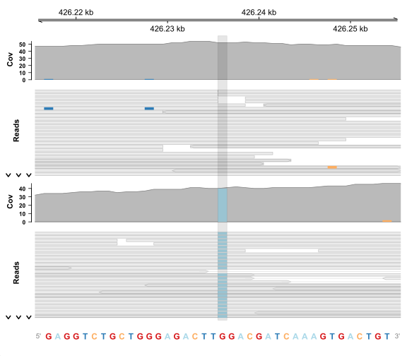
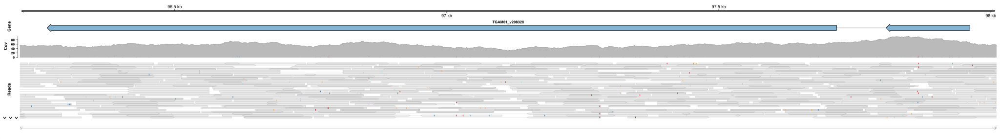

前言
Gviz 和 IGV 的目的一样，都是将基因组可视化，这个脚本主要构建了 Hisat 2 或 Bowtie 2 mapping 后生成 .bam 文件的可视化绘图，相比 IGV，其更美观，参数调整灵活性更强。
单位点锚定图
此脚本输入要展示的核心碱基编号及其它参数，会生成两条轨道进行比对。
wt_bam <- "CK-7-9_clean\\CK-7-9_clean.bam"
mut_bam <- "UV2-7-9-8_clean\\UV2-7-9-8_clean.bam"
ref_fasta <- "CK-7-9_cleaned_v1.fasta"
chr_name <- "NODE_63_length_216026_cov_23.186387"
mut_pos <- 35204
window_size <- 20
plot_start <- mut_pos - window_size
plot_end <- mut_pos + window_size输出示例：

基因本体锚定图
此脚本输入要展示的基因及其它参数，会生成一条轨道进行展示。
sample_bam <- "CK-7-9_clean\\CK-7-9_clean.bam"
ref_fasta <- "CK-7-9_cleaned_v1.fasta"
anno_file <- "CK-7-9_cleaned_v1_annotated.gff3"
target_gene <- "TGAM01_v208328"
flank_size <- 50
inch_per_bp <- 0.02 输出示例：
